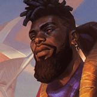

起手裝備
 紅水晶
紅水晶開局先補生命，讓前排換血與 2 技承傷更穩。

K'Sante · 高韌性前排／隔離型坦克鬥士
卡桑帝在 ARAM 先當坦克，不要一看到後排就急著開大。用 1 技疊控制、2 技擋關鍵傷害，真正有機會把核心帶離隊伍時再開「全力以赴」。 7.2e：生命 200→300、雙防各 45→40、新增技能加速 10；總價 3000，合成改為鎖子甲＋負極斗篷＋燃燒寶石＋200。
本站當時評級理由：7.2a 明確把卡桑帝標準 ARAM 傷害提高到 110%，而且狹窄地形更容易用 1 技與 2 技控制目標；大絕還能把關鍵敵人帶離隊伍，但操作難度高，因此列 S。
7.2a 官方將卡桑帝傷害由 100% 提高至 110%，並明確標示此變更同時套用一般 ARAM；7.2b 未再追加標準 ARAM 修正。
開局先補生命，讓前排換血與 2 技承傷更穩。
1 技後接普攻能穩定觸發減速區，生命與護甲也很適合卡桑帝。
長時間貼身團戰提供額外回復與抗性，和坦克打法很契合。

對射手與治療陣提供護甲與重創。

多人團戰很容易疊滿雙抗，後期前排能力大幅提升。
敵方多攻速核心時很好用，也補技能循環。

前期對普攻與物理傷害最穩；法傷與控制很多可改水星之靴。

升級三級鞋後強化物理承傷與護盾；法傷多則改鎖鏈軍靴。

卡桑帝貼身換血頻繁，能穩定補傷害、回復與永久生命。

控制命中後補護盾，前排容錯更高。

持續被消耗的 ARAM 環境能提供穩定續航。

單線兵線密度高，最大生命成長很穩定。

開大後會犧牲防禦與生命上限，低血時增傷特別契合。

保留最可靠的進退與關鍵技能銜接；雪球戰車進場後仍可用閃現修正位置。

雪球命中後可等待隊友跟上再進場，讓近戰英雄在單線拉扯中擁有穩定的接戰與追擊角度。
1 技 > 2 技 > 3 技
ARAM 開局三個基礎技能各點 1 級，之後主升 1 技、次升 2 技；大絕能點就點。
先用 1 技慢慢疊第三段，不要沒資源就硬衝。2 技可用來擋對方高傷技能，前期你的價值主要是站住前排。
寒冰霸拳與無盡絕望後，能更主動壓位置。第三段 1 技把人拉回己方火力區通常比直接開大更穩。
大絕要挑目標與方向。把敵方主力帶到沒有隊友支援的位置很強，但如果開大後反而把自己送進五人中間就會浪費前排價值。
 自然之力
自然之力需要高魔抗與跑速時替換冰霜之心。
 蘭頓之兆
蘭頓之兆專門降低暴擊壓力。
 好戰者鎧甲
好戰者鎧甲頻繁開戰又不想回城時提高續航。
獨立歷史資料：7.2b 分類評級。7.3a 僅有部分增幅公告欄位校正，英雄分類適配與出裝未因此全面重評；不套用到標準 ARAM。
看遊戲卡片下方分類 → 點相同分類 → 看左側 S+／S／A。
一、二技能與大絕都具控制價值，控制增幅能直接提高前排限制能力。
坦度、反位移與貼身控制和卡桑帝的正面玩法高度一致。
生命、雙防與體型能提高開大前的坦度，也能放大部分控制效果。
三技能與其他位移能穩定觸發身法類增幅。
衝刺後的防禦、傷害與穿透能強化進退場連段。
技能循環越快，越容易打出多輪一技能、控制與位移。
7.2b ARAM S 第二批：卡桑帝套用 7.2a 官方明確同步一般 ARAM 的 110% 傷害修正，並遵循 7.2 三級鞋系統。｜v93 7.2d 標準 ARAM 全量校正：已複核 Tier、標準 ARAM 模式修正、7.2c／7.2d 英雄與道具、現行符文名稱及雪球戰車；無額外異動者沿用已驗證配置。｜v94 7.2e：7.2e：生命 200→300、雙防各 45→40、新增技能加速 10；總價 3000，合成改為鎖子甲＋負極斗篷＋燃燒寶石＋200。